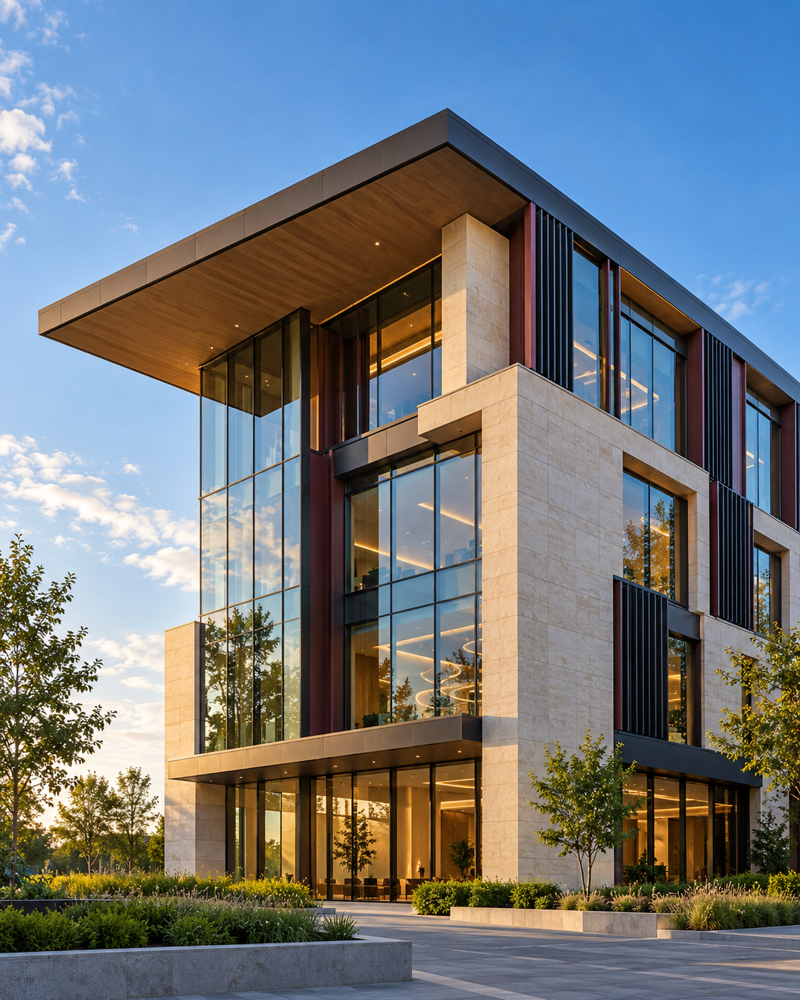
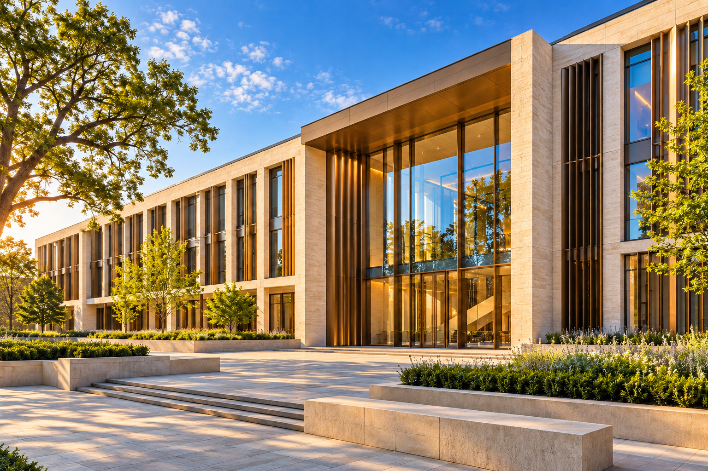
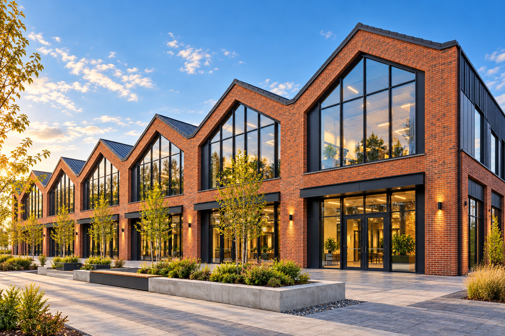
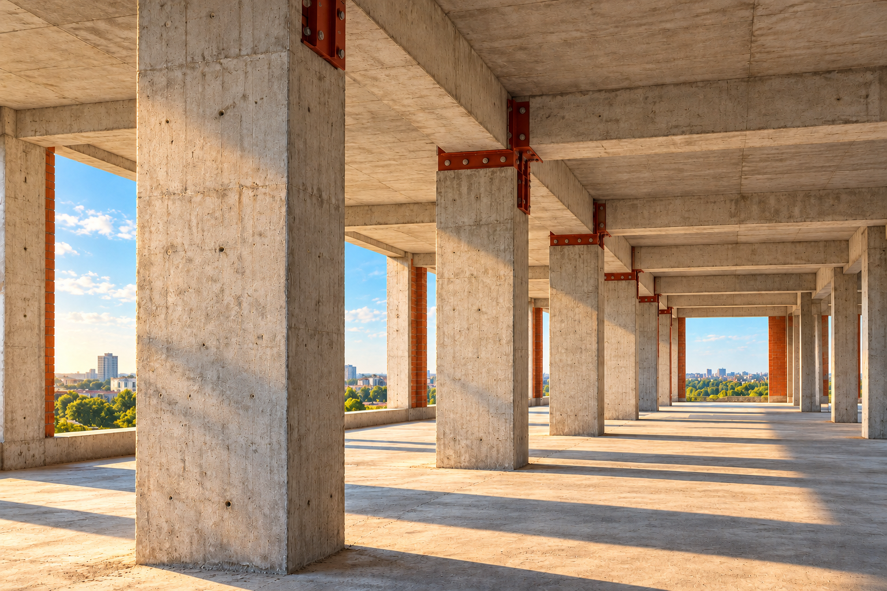

От замысла до готового объектаВаш проект.
Ваш проект.
Под надёжным
контролем.
Помогаем заказчику разобраться в строительстве. Координируем участников, проверяем решения и качество работ.
Найти решение для проекта
Видеть картину целиком.
Не упускать детали.
На какой стадии
ваш проект?
Подключимся к отдельной задаче
или возьмём на себя
сопровождение строительства.



Организовать строительство в интересах заказчика
Поможем определить исходные задачи, собрать участников и выстроить понятный порядок работы. У вас будет целостная картина проекта.
- Подготовка исходных данных и требований
- Координация проектировщиков и подрядчиков
- Контроль ключевых решений и сроков